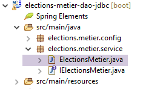
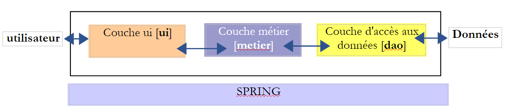

8. [TD]: La capa [metier]
Palabras clave: arquitectura multicapa, Spring, inyección de dependencias.
 |
8.1. Soporte
 |  |
La carpeta [support / chap-08] contiene el proyecto Eclipse de este capítulo.
8.2. Configuración de Maven
 |
El proyecto [elections-metier-dao-jdbc] se basará en el proyecto [elections-dao-jdbc-01]. Vamos a instalar el jar de este último proyecto en el repositorio local de Maven:
 |
Una vez hecho esto, la configuración de Maven del proyecto Eclipse [elections-metier-dao-jdbc] es la siguiente:
 |
<project xmlns="http://maven.apache.org/POM/4.0.0" xmlns:xsi="http://www.w3.org/2001/XMLSchema-instance"
xsi:schemaLocation="http://maven.apache.org/POM/4.0.0 http://maven.apache.org/xsd/maven-4.0.0.xsd">
<modelVersion>4.0.0</modelVersion>
<groupId>istia.st.elections</groupId>
<artifactId>elections-metier-dao-jdbc</artifactId>
<version>0.0.1-SNAPSHOT</version>
<parent>
<groupId>org.springframework.boot</groupId>
<artifactId>spring-boot-starter-parent</artifactId>
<version>1.2.7.RELEASE</version>
</parent>
<properties>
<project.build.sourceEncoding>UTF-8</project.build.sourceEncoding>
<java.version>1.8</java.version>
</properties>
<dependencies>
<!-- DAO -->
<dependency>
<groupId>istia.st.elections</groupId>
<artifactId>elections-dao-jdbc-01</artifactId>
<version>0.0.1-SNAPSHOT</version>
</dependency>
<!-- Spring Boot -->
<dependency>
<groupId>org.springframework.boot</groupId>
<artifactId>spring-boot</artifactId>
<scope>test</scope>
</dependency>
<!-- Prueba de Spring Boot -->
<dependency>
<groupId>org.springframework.boot</groupId>
<artifactId>spring-boot-starter-test</artifactId>
<scope>test</scope>
</dependency>
</dependencies>
<!-- plugins -->
<build>
<plugins>
<plugin>
<artifactId>maven-assembly-plugin</artifactId>
<configuration>
<archive>
<manifest>
<mainClass>config.AppConfig</mainClass>
</manifest>
</archive>
<descriptorRefs>
<descriptorRef>jar-with-dependencies</descriptorRef>
</descriptorRefs>
</configuration>
</plugin>
<!-- para instalar el artefacto del proyecto en el repositorio local de Maven -->
<plugin>
<groupId>org.apache.maven.plugins</groupId>
<artifactId>maven-surefire-plugin</artifactId>
<version>2.18.1</version>
</plugin>
</plugins>
</build>
</project>
- líneas 21-25: la dependencia de jar del proyecto [elections-jdbc-01]. Estas líneas se toman directamente del archivo [pom.xml] del proyecto que se desea importar:
<project xmlns="http://maven.apache.org/POM/4.0.0" xmlns:xsi="http://www.w3.org/2001/XMLSchema-instance" xsi:schemaLocation="http://maven.apache.org/POM/4.0.0 http://maven.apache.org/xsd/maven-4.0.0.xsd">
<modelVersion>4.0.0</modelVersion>
<groupId>istia.st.elections</groupId>
<artifactId>elections-dao-jdbc-01</artifactId>
<version>0.0.1-SNAPSHOT</version>
...
- líneas 26-37: las dependencias necesarias para las pruebas. Aunque están presentes en el archivo [pom.xml] del proyecto [elections-jdbc-01], nos vemos obligados a volver a incluirlas, ya que su atributo [<scope>test</scope>] hace que no se hayan incluido en el jar guardado en el repositorio local de Maven;
8.3. Configuración de Spring
 |
package elections.metier.config;
import org.springframework.cache.annotation.EnableCaching;
import org.springframework.context.annotation.ComponentScan;
import org.springframework.context.annotation.Import;
@Import({ elections.dao.config.AppConfig.class })
@EnableCaching
@ComponentScan(basePackages = { "elections.metier.service" })
public class MetierConfig {
}
- línea 7: se importan todos los beans definidos en la capa [DAO];
- línea 8: se activa la caché. No se redefine el bean [CacheManager], ya que ya está definido en la capa [DAO];
- línea 9: la capa [métier] define nuevos beans en el paquete [elections.metier.service];
8.4. La interfaz [IElectionsMetier]
 |
La capa [metier] tendrá la interfaz presentada en el apartado 4.2. La recordamos:
public interface IElectionsMetier {
public ListeElectorale[] getListesElectorales();
public int getNbSiegesAPourvoir();
public double getSeuilElectoral();
public void recordResultats(ListeElectorale[] listesElectorales);
public ListeElectorale[] calculerSieges(ListeElectorale[] listesElectorales);
}
8.5. La clase de implementación [ElectionsMetier]
 |
Esta clase implementa la interfaz [IElectionsMetier]. La implementación propuesta tendrá la siguiente estructura:
package elections.metier.service;
import org.springframework.beans.factory.annotation.Autowired;
import org.springframework.cache.annotation.Cacheable;
import org.springframework.stereotype.Component;
import elections.dao.entities.ListeElectorale;
import elections.dao.service.IElectionsDao;
@Component
public class ElectionsMetier implements IElectionsMetier {
// el punto de acceso a la capa [dao] instanciada por [Spring]
@SuppressWarnings("unused")
@Autowired
private IElectionsDao electionsDao;
// cálculo de escaños obtenidos
@Override
public ListeElectorale[] calculerSieges(ListeElectorale[] listesElectorales) {
throw new RuntimeException("[calculerSieges] not yet implemented");
}
// listas en competición
@Override
public ListeElectorale[] getListesElectorales() {
throw new RuntimeException("[getListesElectorales] not yet implemented");
}
// guardar resultados
@Override
public void recordResultats(ListeElectorale[] listesElectorales) {
throw new RuntimeException("[recordResultats] not yet implemented");
}
// número de puestos por cubrir
@Override
public int getNbSiegesAPourvoir() {
throw new RuntimeException("[getNbSiegesAPourvoir] not yet implemented");
}
// umbral electoral
@Override
public double getSeuilElectoral() {
throw new RuntimeException("[getSeuilElectoral] not yet implemented");
}
}
- línea 10: la clase [ElectionsMetier] es un componente Spring;
- línea 11: la clase [ElectionsMetier] implementa la interfaz [IElectionsMetier];
- líneas 15-16: inyección Spring de una referencia en la capa [DAO];
- líneas 37 y 44: el número de escaños por cubrir y el umbral electoral se almacenan en caché;
Tarea a realizar: escriba la clase [ElectionsMetier]. Nos guiaremos por los comentarios cuando los haya. No intentaremos interceptar (try / catch) las excepciones de tipo [ElectionsException] que se remontan desde la capa [DAO]. Dejaremos que lleguen hasta la capa [UI]. Dado que la clase [ElectionsException] es un tipo de excepción no controlada, no es obligatorio gestionarla mediante un (try / catch).
8.6. La clase de prueba
 |
La clase de prueba JUnit tendrá la siguiente forma:
package tests;
import org.junit.Test;
import org.junit.runner.RunWith;
import org.springframework.beans.factory.annotation.Autowired;
import org.springframework.boot.test.SpringApplicationConfiguration;
import org.springframework.test.context.junit4.SpringJUnit4ClassRunner;
import dao.config.AppConfig;
import dao.entities.ElectionsException;
import metier.service.IElectionsMetier;
@SpringApplicationConfiguration(classes = MetierConfig.class)
@RunWith(SpringJUnit4ClassRunner.class)
public class Test01 {
// capa [métier]
@Autowired
static private IElectionsMetier electionsMetier;
/**
* vérification 1 : méthode de calcul des sièges on fixe en dur les listes
*/
@Test
public void calculSieges1() {
// crear una tabla con las 7 listas de candidatos (nombre, votos)
// se calculan los escaños de cada lista
// comprobamos los resultados (escaños, votos, eliminaciones)
// temporal
throw new RuntimeException("[calculSieges1] not yet implemented");
}
/**
* vérification 2 : méthode de calcul des sièges on demande les listes à la
* couche [metier] puis on fixe en dur les voix
*/
@Test
public void calculSieges2() {
// la tabla de 7 listas de candidatos se recupera de la base
// las voces están fijas en su sitio
// se calculan los escaños obtenidos por cada lista
// comprobamos los resultados (escaños, votos, eliminaciones)
// temporal
throw new RuntimeException("[calculSieges2] not yet implemented");
}
/**
* vérification 3 méthode de calcul des sièges on provoque une exception
*/
@Test(expected = ElectionsException.class)
// escriba una prueba que provoque una excepción de tipo [ElectionsException]
public void calculSieges3() {
// crear una tabla de 25 listas de candidatos, cada una con 1 voto
// las 25 listas tendrán el mismo número de votos (4%)
// cálculo de plazas - normalmente debería haber un ElectionsException
// con un umbral electoral del 5%
// temporal
throw new RuntimeException("[calculSieges3] not yet implemented");
}
/**
* enregistrement des résultats de l'élection
*/
@Test
public void ecritureResultatsElections() {
// crear una tabla con las 7 listas de candidatos
// las voces están fijas en su sitio
// se calculan los escaños obtenidos por cada lista
// registrar los resultados en la base de datos
// las listas se vuelven a leer en la base de datos
// comprobamos los resultados (escaños, votos, eliminaciones)
// temporal
throw new RuntimeException("[ecritureResultatsElections] not yet implemented");
}
}
Tarea: escribe los cuatro métodos de prueba con la ayuda de los comentarios. Recuerda que, cuando se ejecutan estos métodos, el campo [electionsMetier] de la línea 19 ya se ha inicializado. Comprueba que la prueba JUnit se supere.
8.7. Creación del archivo de la capa [metier]
Al igual que se hizo con la capa [DAO], colocamos el archivo del proyecto [elections-metier-dao-jdbc] en el repositorio local de Maven:
 |
Nota: esta operación puede fallar si su proyecto Eclipse está asociado a un JRE (Java Runtime Environment) en lugar de a un JDK (Java Development Kit). Para averiguarlo, siga los pasos indicados en el apartado 3.1. Si descubre que tiene un JRE y no un JDK, asocie su proyecto a un JDK tal y como se indica en este apartado.
8.8. Conclusión
Recordemos la arquitectura general de la aplicación [Elections] que estamos construyendo:
 |
Hemos creado las capas [metier] y [dao]. Ahora vamos a crear la capa [ui]. Propondremos dos implementaciones para esta capa:
- una implementación de «consola»
- una implementación con interfaz gráfica